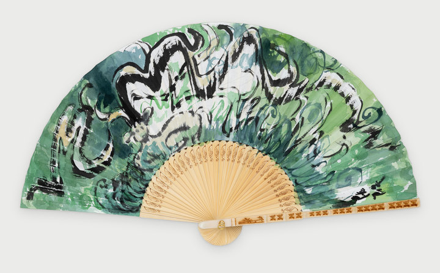

The Resonance of Green: The Breathing Forest초록의 울림: 숨 쉬는 숲

A midsummer mountain grows thick and deep green across the whole fan. Dark green, pale green and teal spread layer upon layer, and over them bold lines of ink swirl freely, shaping the grain of ridges and woods. Patches of bare white Hanji paper look like light filtering through the trees. A deer hides in the thicket on the left, yet unless you look closely, it is hard to find. Layering ink and colors in daring strokes, I let even the deer become part of the forest. A midsummer mountain with nothing but green. Within it, countless lives are still being born and growing. Just like the deep sea, the forest is another world of life that we can never fully know. An old saying holds that heaven and earth were born together with me, and all things are one with me. Like the deer in the woods, if we blend into that green, it is all right not to stand out. When this fan is opened, the breath of deep green blows out as a single breeze.
부채 가득 한여름의 산이 짙푸르게 우거져 있다. 진초록과 연초록, 청록이 겹겹이 번지고, 그 위로 굵은 먹선들이 거침없이 휘돌며 산등성이와 나무숲의 결을 만든다. 군데군데 비어 있는 하얀 한지는 숲 사이로 스며드는 빛처럼 보인다. 왼쪽 수풀 속에는 사슴 한 마리가 숨어 있지만, 자세히 들여다보지 않으면 쉽게 눈에 띄지 않는다. 먹과 채색을 대담한 붓질로 겹쳐, 사슴마저 숲의 일부가 되게 했다. 초록밖에 없는 한여름의 산속. 그 안에서는 지금도 수많은 생명이 태어나고 자란다. 깊은 바다가 그러하듯, 숲 또한 우리가 다 알지 못하는 또 하나의 생명의 세상이다. 하늘과 땅은 나와 함께 생겨났고 만물은 나와 하나라는 옛말이 있다. 숲속의 사슴처럼 우리도 그 초록 속에 섞여 들면, 굳이 드러나지 않아도 괜찮다. 이 부채를 펼치면 짙은 초록의 숨결이 한 줄기 바람으로 불어온다.